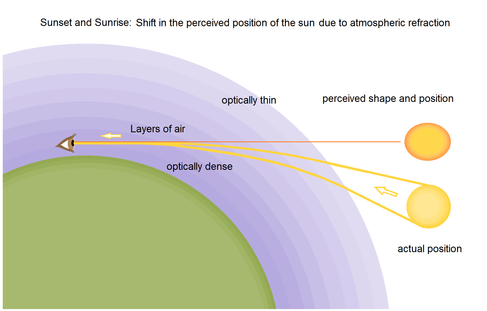
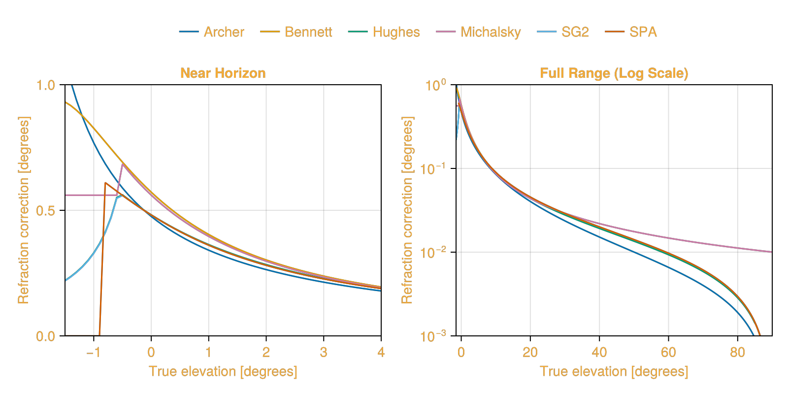

Refraction Correction
Atmospheric refraction causes the apparent position of the sun to differ from its true geometric position. This effect is most pronounced near the horizon and can be corrected using various atmospheric models.
The correction formula for elevation is:
\[e_{apparent} = e_{true} + R\]
Where:
- $e_{apparent}$ is the apparent solar elevation angle (degrees)
- $e_{true}$ is the true solar elevation angle (degrees)
- $R$ is the refraction correction (degrees), calculated based on the chosen refraction model

Figure 1: Atmospheric refraction causes the sun to appear higher in the sky than its true position, especially near the horizon. Image source: Wikimedia Commons.SolarPosition.jl includes several refraction correction algorithms. Below is a summary of the available algorithms:
| Algorithm | Reference | Atmospheric Parameters |
|---|---|---|
HUGHES | [Hug85] | Pressure, Temperature |
ARCHER | [Arc80] | None |
BENNETT | [Ben82] | Pressure, Temperature |
MICHALSKY | [Mic88] | None |
SG2 | [BW12] | Pressure, Temperature |
SPARefraction | [RA04] | Pressure, Temperature |
To calculate refraction, we can use the refraction function:
SolarPosition.Refraction.refraction — Function
refraction(model::RefractionAlgorithm, elevation::T) where {T<:Real}Apply atmospheric refraction correction to the given elevation angle(s).
Arguments
model::RefractionAlgorithm: Refraction model to use (e.g.,HUGHES())elevation::T: True (unrefracted) solar elevation angle in degrees
Returns
- Refraction correction in degrees to be added to the elevation angle
Examples
using SolarPositionhughes = HUGHES(101325.0, 15.0) # 15°C temperatureelevation = 30.0 # 30 degreescorrection = refraction(hughes, elevation)apparent_elevation = elevation + correctionThis function is typically used internally by the solar_position function when a refraction algorithm is specified, but is also a publicly available method.
When using a refraction algorithm like HUGHES, the solar_position function returns an ApparentSolPos struct containing both true and apparent angles.
SolarPosition.Refraction.NoRefraction — Type
struct NoRefraction <: RefractionAlgorithmIndicates that no atmospheric refraction correction should be applied.
This is the default refraction setting for solar position calculations. When used, only basic solar position (azimuth, elevation, zenith) is computed.
When using NoRefraction (the default), the solar_position function returns a SolPos struct containing only the true geometric angles (azimuth, elevation, zenith). In this case, no refraction correction is applied.
Default refraction model
The DefaultRefraction type is a special marker that indicates to use the default refraction behavior for the selected solar position algorithm. For most algorithms, this means no refraction correction (i.e., equivalent to NoRefraction).
SolarPosition.Refraction.DefaultRefraction — Type
struct DefaultRefraction <: RefractionAlgorithmDefault refraction model used when no specific model is provided.
This will depend on the solar position algorithm being used.
Comparison of Refraction Models
Several different refraction models have been proposed in the literature. SolarPosition.jl only implements a subset of them but PRs are always welcome! To compare the different refraction models, the refraction angle is calculated in the range -1 to 90 degree solar elevation in steps of 0.1 degrees.
using SolarPositionusing CairoMakie# Define models and elevation rangemodels = [("Archer", SolarPosition.Refraction.ARCHER()), ("Bennett", SolarPosition.Refraction.BENNETT()), ("Hughes", SolarPosition.Refraction.HUGHES()), ("Michalsky", SolarPosition.Refraction.MICHALSKY()), ("SG2", SolarPosition.Refraction.SG2()), ("SPA", SolarPosition.Refraction.SPARefraction())]elevation = -1.5:0.1:90.0# Create figure with two subplotsfig = Figure(size = (800, 400), backgroundcolor = :transparent, textcolor = "#f5ab35")ax1 = Axis(fig[1, 1], xlabel = "True elevation [degrees]", ylabel = "Refraction correction [degrees]", title = "Near Horizon", backgroundcolor = :transparent, xticks = -1:1:4)ax2 = Axis(fig[1, 2], xlabel = "True elevation [degrees]", ylabel = "Refraction correction [degrees]", title = "Full Range (Log Scale)", yscale = log10, backgroundcolor = :transparent)# Plot refraction for each modelfor (name, model) in models ref = [SolarPosition.Refraction.refraction(model, e) for e in elevation] lines!(ax1, elevation, ref, label = name) mask = ref .> 0 lines!(ax2, elevation[mask], ref[mask])endxlims!(ax1, -1.5, 4); ylims!(ax1, 0, 1.0)xlims!(ax2, -1.5, 90); ylims!(ax2, 1e-3, 1.0)Legend(fig[0, :], ax1, orientation = :horizontal, framevisible = false, tellwidth = false, tellheight = true, nbanks = 1)fig
A comparison of the refraction models is visualized above. The plot on the left shows refraction for solar elevation angles near sunrise/sunset, where refraction is most significant. The plot on the right shows the refraction angles for the entire range of solar elevation angles. Note that for the right plot, the y-axis is a log scale, which emphasizes the difference between the models.
Hughes
The Hughes refraction model accounts for atmospheric pressure and temperature effects.
This model was developed by [Hug85] and is used in the SUNAEP software [Zim81]. It's also the basis for the refraction correction in NOAA's solar position calculator (using fixed pressure of 101325 Pa and temperature of 10°C).
SolarPosition.Refraction.HUGHES — Type
struct HUGHES{T} <: RefractionAlgorithmHughes refraction model.
This function was developed by G. Hughes [1] and was used in the SUNAEP software [2].
It is also used to calculate the refraction correction in the NOAA solar position algorithm using a fixed pressure of 101325 Pa and a temperature of 10 degrees Celsius.
Fields
pressure::Any: Annual average atmospheric pressure [Pascal]temperature::Any: Annual average temperature [°C]
Constructor
HUGHES(): Uses default parameters: pressure = 101325 Pa, temperature = 12 °CHUGHES(pressure, temperature): Specify custom pressure [Pa] and temperature [°C]
Notes
The equation to calculate the refraction correction is given by:
For 5° < elevation ≤ 90°:
\[\frac{58.1}{\tan(el)} - \frac{0.07}{\tan(el)^3} + \frac{8.6 \times 10^{-5}}{\tan(el)^5}\]
For -0.575° < elevation ≤ 5°:
\[el \cdot (-518.2 + el \cdot (103.4 + el \cdot (-12.79 + el \cdot 0.711))) + 1735\]
For elevation ≤ -0.575°:
\[\frac{-20.774}{\tan(el)}\]
where el is the true (unrefracted) solar elevation angle.
The result is then corrected for temperature and pressure:
\[\text{Refract} \times \frac{283}{273 + T} \times \frac{P}{101325} \times \frac{1}{3600}\]
Literature
This function was developed by [Hug85] and was used in the SUNAEP software [Zim81]. It is also used to calculate the refraction correction in the NOAA solar position algorithm using a fixed pressure of 101325 Pa and a temperature of 10 degrees Celsius.
Example
using SolarPosition# Create Hughes refraction model with default parametershughes = HUGHES()# Or specify custom atmospheric conditionshughes_custom = HUGHES(101325.0, 25.0) # 25°C temperature# Apply refraction correction to elevation angleelevation = 30.0 # degreesrefraction_correction = refraction(hughes, elevation)apparent_elevation = elevation + refraction_correctionArcher
The Archer refraction model is a cosine-based correction that does not require atmospheric parameters.
This simplified model from [Arc80] computes refraction based on the zenith angle using trigonometric relationships. It's useful when atmospheric data is not available.
SolarPosition.Refraction.ARCHER — Type
struct ARCHER <: RefractionAlgorithmArcher refraction model.
Atmospheric refraction correction based on the Archer algorithm.
This function calculates the atmospheric refraction correction of the solar elevation angle using the method described by Archer [1]. The method was originally developed to be used with the Walraven solar position algorithm [2].
Fields
Constructor
ARCHER(): Creates an Archer refraction model instance
Notes
The equation to calculate the refraction correction is given by:
\[\begin{aligned} C &= \cos(Z) + 0.0083 \cdot \left(\frac{1}{0.955 + (20.267 \cdot \cos(Z))} - 0.047121 \right)\\ Z_a &= \arccos(C)\\ \text{refraction} &= Z - Z_a \end{aligned}\]
where $Z$ is the true solar zenith angle and $Z_a$ is the apparent zenith angle.
Literature
This method was described by [Arc80] and was originally developed to be used with the Walraven solar position algorithm [Wal78].
Example
using SolarPosition# Create Archer refraction modelarcher = ARCHER()# Apply refraction correction to elevation angleelevation = 30.0 # degreesrefraction_correction = refraction(archer, elevation)apparent_elevation = elevation + refraction_correctionBennett
The Bennett refraction model is widely used in marine navigation and accounts for atmospheric conditions.
Developed by [Ben82], this model provides accurate refraction corrections with adjustments for atmospheric pressure and temperature. It's particularly effective for low elevation angles.
SolarPosition.Refraction.BENNETT — Type
struct BENNETT{T} <: RefractionAlgorithmBennett refraction model.
Atmospheric refraction correction based on the Bennett algorithm.
Calculation of atmospheric refraction correction of the solar elevation angle using the method developed by Bennett [1].
Fields
pressure::Any: Annual average atmospheric pressure [Pascal]temperature::Any: Annual average temperature [°C]
Constructor
BENNETT(): Uses default parameters: pressure = 101325 Pa, temperature = 12 °CBENNETT(pressure, temperature): Specify custom pressure [Pa] and temperature [°C]
Notes
The equation to calculate the refraction correction is given by:
\[\text{ref} = \frac{0.28 \cdot P}{T+273} \cdot \frac{0.016667}{\tan(el + 7.31 / (el+4.4))}\]
where $P$ is the local air pressure in hPa, $T$ is the local air temperature in °C, and $el$ is the true (uncorrected) solar elevation angle.
Literature
This method was described by [Ben82].
Example
using SolarPosition# Create Bennett refraction model with default parametersbennett = BENNETT()# Or specify custom atmospheric conditionsbennett_custom = BENNETT(101325.0, 25.0) # 25°C temperature# Apply refraction correction to elevation angleelevation = 30.0 # degreesrefraction_correction = refraction(bennett, elevation)apparent_elevation = elevation + refraction_correctionMichalsky
The Michalsky refraction model uses a rational polynomial approximation.
From [Mic88], this algorithm is part of the Astronomical Almanac's method for approximate solar position calculations. It includes special handling for very low elevation angles.
SolarPosition.Refraction.MICHALSKY — Type
struct MICHALSKY <: RefractionAlgorithmMichalsky refraction model.
Atmospheric refraction correction based on the Michalsky algorithm.
This function calculates the atmospheric refraction correction of the solar elevation angle using the method described by Michalsky [1].
Fields
Constructor
MICHALSKY(): Creates a Michalsky refraction model instance
Notes
The equation to calculate the refraction correction is given by:
\[\text{ref} = \frac{3.51561 \cdot (0.1594 + 0.0196 \cdot el + 0.00002 \cdot el^2)}{1 + 0.505 \cdot el + 0.0845 \cdot el^2}\]
where $el$ is the true (uncorrected) solar elevation angle.
Note that 3.51561 = 1013.2 mb / 288.2 °C.
For elevation angles below -0.56°, the refraction correction is clamped to 0.56°.
Literature
This method was described by [Mic88].
Example
using SolarPosition# Create Michalsky refraction modelmichalsky = MICHALSKY()# Apply refraction correction to elevation angleelevation = 30.0 # degreesrefraction_correction = refraction(michalsky, elevation)apparent_elevation = elevation + refraction_correctionSG2
The SG2 (Second Generation) refraction algorithm is optimized for fast computation over multi-decadal periods.
Developed by [BW12], this algorithm uses a two-regime approach with different formulas for elevations above and below a threshold. It accounts for atmospheric pressure and temperature.
SolarPosition.Refraction.SG2 — Type
struct SG2{T} <: RefractionAlgorithmSG2 refraction model.
Atmospheric refraction correction based on the algorithm in SG2.
This function calculates the atmospheric refraction correction of the solar elevation angle using the method developed by Ph. Blanc and L. Wald [1].
Fields
pressure::Any: Annual average atmospheric pressure [Pascal]temperature::Any: Annual average temperature [°C]
Constructor
SG2(): Uses default parameters: pressure = 101325 Pa, temperature = 12 °CSG2(pressure, temperature): Specify custom pressure [Pa] and temperature [°C]
Notes
The equation to calculate the refraction correction is given by:
For $el > -0.01$ radians:
\[\frac{P}{1010} \cdot \frac{283}{273+T} \cdot \frac{2.96706 \times 10^{-4}}{\tan(el+0.0031376 \cdot (el+0.089186)^{-1})}\]
For $el \leq -0.01$ radians:
\[-\frac{P}{1010} \cdot \frac{283}{273+T} \cdot \frac{1.005516 \times 10^{-4}}{\tan(el)}\]
where $el$ is the true solar elevation angle, $P$ is the local air pressure in hPa, and $T$ is the local air temperature in °C.
Literature
This method was described by [BW12].
Example
using SolarPosition# Create SG2 refraction model with default parameterssg2 = SG2()# Or specify custom atmospheric conditionssg2_custom = SG2(101325.0, 25.0) # 25°C temperature# Apply refraction correction to elevation angleelevation = 30.0 # degreesrefraction_correction = refraction(sg2, elevation)apparent_elevation = elevation + refraction_correctionSPARefraction
The SPARefraction (Solar Position Algorithm) refraction model is part of NREL's high-accuracy solar position algorithm.
From [RA04], this is the refraction correction used in NREL's SPA algorithm, which is accurate to ±0.0003° over the years -2000 to 6000. It includes a configurable refraction limit for below-horizon calculations.
SolarPosition.Refraction.SPARefraction — Type
struct SPARefraction{T<:Real} <: RefractionAlgorithmSPARefraction - SPA (Solar Position Algorithm) refraction model.
Atmospheric refraction correction from the SPA algorithm.
This function calculates the atmospheric refraction correction of the solar elevation angle using the method described in Reda and Andreas's [1] Solar Position Algorithm (SPA).
Fields
pressure::Real: Annual average atmospheric pressure [Pascal]temperature::Real: Annual average temperature [°C]atmos_refract::Real: Minimum elevation angle for refraction correction [degrees]
Constructor
SPARefraction(): Uses default parameters: pressure = 101325 Pa, temperature = 12 °C, atmos_refract = -0.5667°SPARefraction(pressure, temperature): Specify custom pressure [Pa] and temperature [°C], uses default atmos_refractSPARefraction(pressure, temperature, atmos_refract): Also specify refraction limit [degrees]
Notes
The equation to calculate the refraction correction is given by:
\[\text{ref} = \frac{P}{1010} \cdot \frac{283}{273 + T} \cdot \frac{1.02}{60 \cdot \tan(el + 10.3/(el + 5.11))}\]
where $el$ is the true solar elevation angle, $P$ is the annual average local air pressure in hPa/mbar, and $T$ is the annual average local air temperature in °C.
The refraction limit parameter determines the solar elevation angle below which refraction is not applied, as the sun is assumed to be below horizon. Note that the sun diameter (0.26667°) is added to this limit.
Literature
This method was described by [RA04].
Example
using SolarPosition# Create SPARefraction model with default parametersspa = SPARefraction()# Or specify custom atmospheric conditionsspa_custom = SPARefraction(101325.0, 25.0) # 25°C temperature# With custom refraction limitspa_limit = SPARefraction(101325.0, 12.0, -1.0) # Don't correct below -1°# Apply refraction correction to elevation angleelevation = 30.0 # degreesrefraction_correction = refraction(spa, elevation)apparent_elevation = elevation + refraction_correction